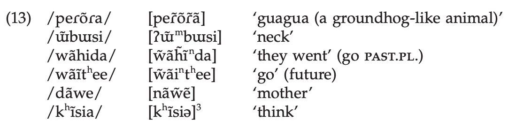

—
https://goo.gl/forms/lsnkzZHhy4BFIbgv2
Common Phonological Processes
Syllable Structures
Some Data!
Syllabification
When sounds change to become more like one another
Also known as: Peer Pressure
When other phones in a word change to match the nasality of a nasal segment

“If I’m going to be nasal, you’re all going to be nasal with me, damnit!”
From Epeda Pedee, in Rose, S. and Walker, R. (2011). Harmony Systems. In The Handbook of Phonological Theory (eds J. Goldsmith, J. Riggle and A. C. Yu). doi:10.1002/9781444343069.ch8
This also happens with vowels (e.g. Turkish) and elsewhere
When vowels change to match the other vowels in the word
—
Türkiye’dir - ‘it is Turkey’
kapidir - ‘it is the door’
gündür - ‘it is day’
paltodur - ‘it is the coat’
The vowel in the last syllable changes depending on the other vowels!
When sounds change to become less like one another
Also known as: High School Rebellion
The third rural bird juror murderer demurred.
“surprise” /səɹpɹajz/ is usually /səpɹajz/, same with “berserk”.
“Purple” comes from “purpure”
February goes from /fɛbɹuɛɹi/ to [fɛbjuɛɹi]
When a sound pops up to prevent an awkward or undesirable combination
Also known as: Showing up on a friend’s bad date
/dɪʃ/ + /s/ -> [dɪʃɪz]
/ɹat/ + /d/ -> [ɹaɾɪd]
The vowel ‘pops in’ to stop /ʃs/ and /td/ from being a thing
Languages also LOVE to epenthesize to stop VV
When a sound is removed to stop an awkward or undesirable combination from occurring
Also known as: Uninviting your friend’s ex from the party
Fifth, /fɪfθs/ -> [fɪθs]
Family, /fæmɪli/ -> [fæmli]
comfortable, /kʌmfərtəbəl/ -> [kʌmftərbəl]
They’re all awesome
… but those four are super common
Before you start looking for a pattern, think about what’s going on and what might trigger it
If you’re seeing fronting, look for fronting
English is among them.
English speakers have an intuitive sense of syllables
We use . to mark syllable boundaries in phonology
Under
Decoagulate
Antipenultimate
 |
“dough” (/doʊ/) has a simple onset
“stow” (/stoʊ/) has a complex onset
“diss” (/dɪs/) has a simple coda
“disk” (/dɪsk/) has a complex coda
A syllable without a coda is ‘open’
A syllable with a coda is ‘closed’
The Nucleus is obligatory
Onsets are very common, and sometimes required
Codas are complicated
No languages require a coda
Some languages ban codas
Some languages allow simple, but not complex, codas
Some languages restrict what segments can appear in codas
| welaweka | velvet |
| wekeke: | whiskey |
| halaki | Charlotte |
| ma:keke | market |
| kikiki | ticket |
| koloke: | croquet |
| kilipaki | gilbert |

‘Merry Christmas’ - merii kurisumasu
‘Sixths’ [sɪksθs]
‘Strengths’ (/stɹɛŋkθs/)
‘Glance’ - Всгляд (/vzglʲat/)
‘Of Construction’ - строительств (/strʌˈʲitʲɛlʲstf/)
… but not always
When consonants become syllabic, they gain [+syll]
‘Able’ [ejbl̩]
‘Fun and games’ [fʌn n̩ gejmz]
Strč prst skrz krk - ‘Stick your finger down your throat’
| wʌt |
skɪn |
|---|---|
| tʰaɹ |
spun |
|
pʰat |
spat |
|
ɹɛntʰɪŋ |
ɹɪstaɹt |
| kʰjubə | pʰakʰɪt |
|
staɹ |
spɪnstə˞ |
[-cont,-voice] -> [+spread glottis] / .__
atrocious [ə.ˈtʰro.ʃəs]
atlantic [ˌæt̚.ˈlæn.tɪk]
acclaim [ə.ˈkʰleɪm]
‘the jail’ el carcel [el.’kar.sel]
‘the coat’ el abrigo [e.la.’βri.γo]
‘to support children’ soportar niños [so.por.ˈtar.ni.’ɲos]
‘to bear insults’ soportar insultos [so.por.ˈta.rin.ˈsul.tos]
‘Some blows’ Unos golpes [u.nos.’gol.pes]
‘Some sheets’ Unas hojas [u.na.’so.has]
CV.CV.CV is preferred
Words will be re-combined to move towards CV.CV.CV where possible
This is called ‘enlace’ in Spanish
There’s something different about the distribution of ‘lax’ vowels /ɪ ɛ ʊ æ ʌ/ vs ‘tense’ vowels /i eɪ a oʊ u ɜ˞/
Why do we have “see, say, sue, so, saw, sir” for the tense vowels, but “sit, set, soot, sat, shut” for the lax ones?
Describe the possible distributions of lax and tense vowels in English?
Speakers have strong intuitions about them
Languages make strong prohibitions and rules regarding syllables
Rules often have syllable position as triggers
So, they’re good to think about!
1: Assign every vowel to a nucleus position
2: Maximize the onsets
Every prevocalic consonant should be placed into an onset
Every other consonant which can also be placed in an onset, should be
3: Every consonant remaining behind is a coda
Now, syllabify the words on this slide. Desensitizational reprocessing.
Be on the lookout for common phonological processes
Syllables have four parts (Onset, Nucleus, Rime, Coda)
Phonological rules and phenomena often use syllables
Always maximize the onset